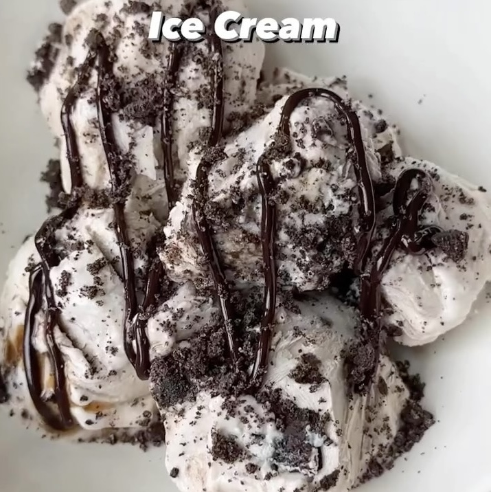

Helado Cookies & Cream
Ingredientes:
- 2 tazas de Queso Cottage
- 2 cucharadas de miel
- 1/4 taza de leche de almendras
- 1/2 cucharada de proteína en polvo
- 2 Oreo Thin
Instrucciones:
- Licuar queso cottage, miel, leche y proteína en polvo.
- Añadir los oreos arriba
- Poner en el congelador por 3 a 4 horas.